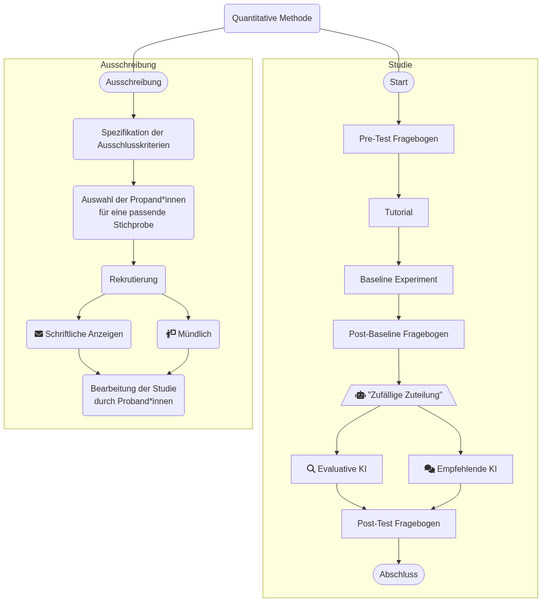

Living Document
GitHub Repository: https://github.com/linnealund/SMNF-Gruppe-A5
Für die Abgabe aktueller GitHub Hash: SOME_HASH
Code of Conduct
Im Rahmen unserer Zusammenarbeit als Projektgruppe halten wir einen Verhaltenskodex ein, der wie folgt definiert ist:
Umgang mit Feedback und Meinungsverschiedenheiten
Wir begegnen Meinungsverschiedenheiten stets offen und ermutigen kritisches Denken. Jeder soll die Möglichkeit haben Bedenken, Gedanken und Meinungen frei äußern zu dürfen, ohne dafür diskriminiert zu werden. Dabei legen wir Wert auf konstruktives Feedback.
Faire Aufteilung der Arbeitslast
Die Einzelnen Aufgaben werden gleichmäßig verteilt, so dass jeder ähnlich viel machen muss. Dabei achten wir auf Stärken und Schwächen jedes einzelnen und gehen bei der Verteilung auf diese ein.
Verhalten in Bezug auf vereinbarte und verpflichtende Termine
Jeder hat die Verantwortung vereinbarte Termine wahrzunehmen. Sollte es aus Gründen dazu kommen, dass besagter Termin nicht wahrgenommen werden kann, so muss rechtzeitig Bescheid gegeben werden. So kann den anderen Mitgliedern eine Umplanung ermöglicht werden.
Wissenschaftliche Integrität
Wir halten uns an die Grundsätze guten wissenschaftlichen Arbeitens. Dazu gehören Ehrlichkeit, Genauigkeit, Objektivität sowie der verantwortungsvolle Umgang mit Daten und Quellen. Plagiate, Datenmanipulation oder das bewusste Verschweigen von Quellen widersprechen somit unseren Werten.
Datenschutz und Vertraulichkeit
Personenbezogene Daten und vertrauliche Informationen behandeln wir mit Sorgfalt und Diskretion. Dabei halten wir uns an die geltenden Datenschutzgesetze.
Umgang mit KI-Werkzeugen
Der Einsatz von KI-Tools, wie z.B. ChatGPT erfolgt transparent und verantwortungsvoll. Beiträge, die unter Nutzung solcher Hilfsmittel entstanden sind, werden eindeutig gekennzeichnet und auf Korrektheit geprüft.
1 Einleitung
2 Literaturübersicht
Im digitalen Zeitalter häufen sich Risiken in Bezug auf gesellschaftliches Vertrauen und Fehlinformationen in den Sozialen Medien (Kumar & Taylor, 2024). Die erste Studie, die wir für unsere Forschungsfrage heranziehen, kombiniert Ergebnisse aus einer Reihe von Studien von 2014 bis 2024, die sich mit der Thematik der Aufdeckung von Misinformation beschäftigen. Hieraus entwickelt die Studie, inwiefern sich Künstliche Intelligenz auf eine Abschwächung dieses Problems positiv auswirken kann und welche Entwicklungen im beobachteten Zeitraum in diesem Bereich stattgefunden haben (Kumar & Taylor, 2024).
Diese Studie hilft uns dabei eine gute Grundlage für die Thematik zu bilden und die aktuelle Entwicklung zu visualisieren.
Der Artikel “Blockchain for Social Good: Combating Misinformation on the Web with AI and Blockchain” (Seneviratne, 2022) behandelt die Problematik, dass Künstliche Intelligenz sowohl zur Verbreitung von Misinformation beiträgt (z.B. durch Deepfakes), als auch zu deren Bekämpfung eingesetzt werden kann (z.B. durch Erkennungssysteme). Mithilfe von Kombination mit der Blockchain-Technologie ist es möglich Inhalte besser zu prüfen und Falschinformationen einzudämmen. Damit wird die doppelte Rolle der Künstlichen Intelligenz als Quelle und Werkzeug im Kampf gegen Misinformationen verdeutlicht (Seneviratne, 2022).
Wir ersehen es als wichtig, die Rolle von Künstlicher Intelligenz kritisch zu betrachten, auch die negative Nutzung zu erwägen und resultierend Lösungsansätze auszuarbeiten.
Unser letzter Artikel beschäftigt sich mit dem Problem, dass Falschinformationen in verschiedenen Modalitäten verbreitet werden (z.B. auch visuell, auditiv, etc.) und aktuelle KI-Modelle nach jetzigem Stande nicht ausreichend in der Lage sind Multimodale Falschinformationen zu verarbeiten. Insbesondere das Unterstreichen von falschen Informationen mit echten Bildern ohne Zusammenhang, stellt hierbei ein Problem dar. Hierfür wurde ein Machine-Learning Modell entwickelt, welches lernt mehrere Modalitäten zu analysieren und Falschinformationen zu erkennen (Saeidnia et al., 2025).
Diese Studie weist auf mögliche, zukünftige Entwicklungsaspekte im Bereich der Künstlichen Intelligenz hin.
3 Methode
Qualitative Methode
Zur Beantwortung unserer Forschungsfrage haben wir uns für eine qualitative Methode entschieden, weil wir genauer verstehen wollten, wie Menschen über den Einsatz von Künstlicher Intelligenz gegen Misinformation denken. Besonders wichtig war uns, persönliche Meinungen, Erfahrungen und Einschätzungen zu hören. Gerade bei einem Thema wie KI, das viele Fragen aufwirft und sehr unterschiedlich wahrgenommen wird, hilft dieser Ansatz dabei, die Perspektiven möglicher Nutzer besser nachzuvollziehen.
Wir haben gezielt zwei Personen aus unserem näheren Umfeld befragt, die sich in einem unterschiedlichen Ausmaß mit dem Thema beschäftigen. Eine Person hatte persönliche Berührungspunkte mit KI im Alltag, während die andere sich intensiver im akademischen Kontext mit Fragen rund um Künstliche Intelligenz und Misinformation auseinandersetzt.
Die Interviews wurden leitfadengestützt durchgeführt und gleichzeitig mit dem Smartphone aufgezeichnet. Die Aufnahmen wurden mithilfe der Open-Source-Transkriptionssoftware Whisper transkribiert und anschließend gelöscht. Ebenso wurden die Interviewten anonymisiert.
Die Analyse erfolgte mittels thematischer Analyse der Transkripte. Wir haben die Auswertung gemeinsam und synchron durchgeführt, um eine einheitliche Interpretation der Inhalte zu gewährleisten. Auf eine spezielle Analyse-Software wurde dabei verzichtet, da der Umfang der Daten das manuelle Arbeiten ermöglichte.
Quantitative Methode

Zur Untersuchung von möglichen Unterschieden zwischen evaluativer und empfehlender künstlicher Intelligenz, besonders in Bezug auf Variablen wie Workload, Genauigkeit, Vertrauen und weitere, wurde ein between-subjects-Design gewählt. Hierbei werden TeilnehmerInnen zufällig eine von den zwei KI-Varianten zugeteilt, wodurch je die Hälfte der Beantwortungen sich auf eine der KI-Varianten beziehen. Auch beinhaltet unsere Studie ein within-subject-Design, welches zuerst das Bewerten ohne und folgend mit KI-Unterstützung vorsieht. Insgesamt haben wir uns für eine Kombination aus beiden und somit zu einem Mixed Design entschieden.
Der Ablauf unserer Studie sieht zu Beginn das Ausfüllen einer Datenschutzerklärung vor. Hier wird sichergestellt, dass die TeilnehmerInnen über die Handhabung ihrer persönlichen Daten informiert werden und sie über die Datenschutzrichtlinien aufgeklärt werden. Hierauf folgt ein Pre-Test-Fragebogen, welcher die grundlegenden Merkmale unserer ProbandInnen erfragt, wie zum Beispiel das Alter. Durch diese Merkmale beziehungsweise Variablen lassen sich die Daten einordnen und analysieren. Mit einem kleinen Tutorial wird man in die kommenden Aufgaben eingeführt. Im nächsten Ablaufschritt beginnt man nun mit den Experimenten. Hier werden die TeilnehmerInnen dazu aufgefordert 10 Posts ohne die Hilfe von künstlicher Intelligenz als Misinformation oder korrekte Information zu klassifizieren. Nach der Bewertung dieser Posts folgt ein Post-Baseline-Fragebogen, um die Empfindungen der Arbeitsbelastung der zuvor ausgeführten Aufgabe festzustellen. Nun kommt es zum nächsten Experiment, wo nicht wie zuvor nur die ProbandInnen über die Bewertung der Posts entscheiden, sondern auch KI genutzt wird. Eingeteilt werden die ProbandInnen zufällig zu einer von zwei Experiment-Versionen. Die erste bezieht eine evaluierende KI ein und die zweite eine empfehlende KI. Hier durchlaufen sie wie zuvor 10 Posts und werden aufgefordert diese zu klassifizieren. Zum Abschluss der Studie füllen sie einen finalen Post-Test-Fragebogen aus, werden verabschiedet und erhalten eine kurze Danksagung für ihre Teilnahme.
Für die Durchführung unserer Studie wurden zumal die ProbandInnen rekrutiert. Die geplante Anzahl beträgt 15 bis 20 TeilnehmerInnen, diese müssen über 18 Jahre alt sein und dürfen derzeit nicht an dem Modul SMNF an der Universität Lübeck teilnehmen. Auch sollen sie aus verschiedenen Altersbereichen stammen. Dies stellt sicher, dass die TeilnehmerInnen aus verschiedenen Bereichen und ohne spezifische Vorerfahrung aus dem Modul, unterschiedliche Einblicke in die Studie einbringen.
Die Erhebung findet vom 24.05.2025 bis zum 02.06.2025 in Form einer Online-Umfrage statt. Durchgeführt wird diese an einem Rechner oder Tablet.
Zur Erhebung der gesammelten Daten werden verschieden Fragebögen genutzt. Bevor das eigentliche Experiment anfängt, werden die ProbandInnen über verschiedene demographische Daten gefragt, welche verschiedene Skalen nutzen (bspw. eine nominale Skala für die Geschlechtsangabe und ordinale Skalen für die Abschlüsse der ProbandInnen). Als zweiter Teil des Pre-Test-Fragebogen werden den ProbandInnen Fragen zu ihrer interaktionsbezogenen Technikaffinität gestellt, welche eine metrische Skala nutzen (Franke et al., 2019).
Während des Experimentes müssen die ProbandInnen nun eine Falschinformation identifizieren (Ja oder nein) und das System speichert die Korrektheit der Entscheidung (Richtig oder falsch) mithilfe einer binären Skala. Außerdem werden die Reaktionszeit und Trefferquote des zweiten Tasks in einer metrischen Skala gemessen.
Nach dem Baseline-Experiment (ohne KI-Unterstützung) sowie nach dem Durchlauf mit KI-Unterstützung werden die ProbandInnen nach ihrer Beanspruchung in verschiedenen Bereichen gefragt. Dies wird im Rahmen einer metrischen Skala gespeichert (Grippenkoven et al., 2018). Zusätzlich wird nach dem zweiten Durchlauf auch mithilfe einer metrischen Skala abgefragt, wie viel die ProbandInnen über die Informationsverarbeitung des Systems wissen und wie sie es einschätzen können (Schrills & Franke, 2021).
Als nächstes wird abgefragt, wie vertrauensvoll und verlässlich die KI bzw. das System wahrgenommen wird (Madsen & Gregor, 2000). Zusätzlich werden allgemeine Fragen zur Wahrnehmung des Systems gestellt (Laugwitz et al., 2008) Beide Fragebögen nutzen die metrische Skala.
Und zuletzt sollen die ProbandInnen die allgemeine Gebrauchstauglichkeit des Systems bewerten mithilfe einer metrischen System Usability Scale (Gao et al., 2020).
4 Ergebnisse
Qualitative Ergebnisse
Für die Interviews haben wir insgesamt zwei NutzerInnen befragt und die Interviews dann analysiert. Dabei haben wir darauf geachtet, Personen mit unterschiedlichen Perspektiven und Vorkenntnissen auszuwählen. Eine Person hat sich selbst bereits mit diesem Thema im akademischen Kontext befasst und die andere Person nutzt KI manchmal in ihrem Alltag, hat desweiteren aber keine spezifischen Kenntnisse.
| Name | Definition | Textstelle |
|---|---|---|
| [T1] KI-Skepsis | Viele NutzerInnen vertrauen KI nur bedingt, da sie auch fehlerhaft ist und NutzerInnen die Funktionweise schwer nachvolziehen können. | “Denn nicht jede Person glaubt, was die KI sagt, weil die KI auch Missinformationen verbreiten kann. […] Deswegen bin ich manchmal ein bisschen skeptisch, was die KI auch selbst von sich gibt.” (A5_1, Zeile 107-110) |
| [T2] Vereinfachte Darstellung | Um den Überblick behalten zu können, sollten die Antworten der KI in Stichpunkten oder kurzen Absätzen passieren. | “Dass man einen Überblick hat über die Informationen, die man da gerade kriegt.” (A5_2, Zeile 168-169) |
| [T3] Kontrolle über die Nutzung | Die NutzerInnen sollen selbst entscheiden können, wann und in welchen Umfang sie die KI nutzen. | “Ich bin eher dafür, die Möglichkeit zu haben, es an- und auszuschalten, da ich der Meinung bin, dass jeder seine eigenen Präferenzen hat und es auch Leute gibt, die nicht KI nutzen möchten […].” (A5_1, Zeile 223-225) |
Für die Interviews haben wir insgesamt zwei NutzerInnen befragt und die Interviews dann analysiert. Dabei haben wir darauf geachtet, Personen mit unterschiedlichen Perspektiven und Vorkenntnissen auszuwählen. Eine Person hat sich selbst bereits mit diesem Thema im akademischen Kontext befasst und die andere Person nutzt KI manchmal in ihrem Alltag, hat des weiteren aber keine spezifischen Kenntnisse.
Beide Probanden haben Bedenken zur Glaubwürdigkeit der Aussagen der KI [T1] geäußert, besonders wenn es um Belegung der Aussagen durch entsprechende Quellen geht.
Dies ist das Resultat aus vorherigen Erfahrungen mit KI. In diesen Fällen gab ihnen KI falsche Antworten und verbreitete somit selbst Missinformationen: „Da kann es aber nämlich auch passieren, dass es dann vielleicht auch falsche Quellen mit rein nimmt. Und dass dadurch dann auch die Antwort verfälscht wird.“ (A5_2, Zeile 62-64) Daraus folgt also die Skepsis zur weiteren Nutzung von KI.
Als Lösungsansatz nannte eine Person A5_1 eine hohe Transparenz der KI: „Man muss wissen, woher die KI ihre Quellen hat, ihre Belege, ihre Beispiele oder auch aus welchen Quellen ihre Aussage kommt. Das ist auf jeden Fall sehr wichtig, damit die Richtigkeit der Aussagen wirklich belegt werden kann.“ (A5_1, Zeile 118-122)
In beiden Interviews wurde die Wichtigkeit, einen guten Überblick [T2] behalten zu können, hervorgehoben. Die Antworten der künstlichen Intelligenz sollen möglichst kurz und präzise in Textformat dargestellt werden, beispielsweise in Stichpunkten oder auch kurzen Absätzen. „[…] wenn es ein langer Paragraph ist, dann bitte mit vorgehobenen Wörtern, weil es sich einfach einfacher beim Lesen macht und ich bevorzuge einfach Stichpunkte.“ (A5_1, Zeile 244-246) So gewährleistet man, dass die NutzerInnen die Informationsmenge gut verarbeiten können und das Interagieren mit der KI als angenehm empfunden wird.
Unsere ProbandInnen betonen zudem, dass die NutzerInnen selbst entscheiden können sollen, wann und wie sie die KI nutzen wollen [T3]. Die persönlichen Präferenzen sind unterschiedlich und es ist wichtig, diese im Rahmen der KI zu beachten. Eine Person betont hier aber auch den Gegenfall, wenn die KI eben nicht immer automatisch aktiviert ist: „ […] aber würde man ja auch die Missinformation halt sehen und vielleicht auch denken, dass es wahr ist und das glauben.“ (A5_2, Zeile 153-155)
5 Diskussion
Literaturverzeichnis
Anhang 1 - Rekrutierungstext
TeilnehmerInnen für KI-Studie gesucht!
Für unsere Studie zum Thema KI-Unterstützungssysteme als Hilfsmittel zur Erkennung von Falschinformationen suchen wir ProbandInnen. Dabei untersuchen wir den Umgang mit solchen KI-Unterstützungssysteme
Einschlusskriterien sind:
Du bist mindestens 18 Jahre alt
Du nimmst derzeit nicht am Modul Statistik und Methoden der Nutzenden-Forschung an der Uni Lübeck teil
Du hast einen Laptop/PC oder Tablet, an dem du die online Studie ausfüllen kannst
Die Teilnahme dauert ca. 45-60 Minuten und erfolgt online. Alle Daten werden anonym behandelt.
Interesse geweckt? Dann nimm jetzt über folgenden Link teil: https://dsslab.hciuse.sh/study/pilot?groupId=gr-a5
Vielen Dank für deine Unterstützung!
Linnea, Sophie, Mel, Lina und Eric